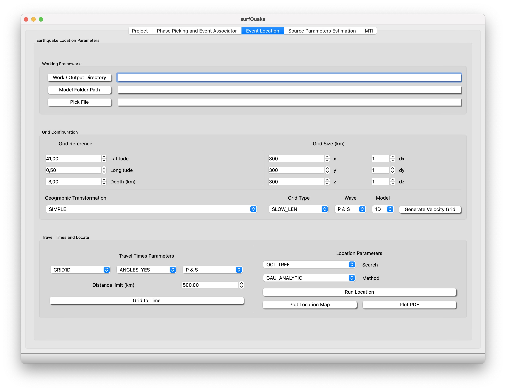
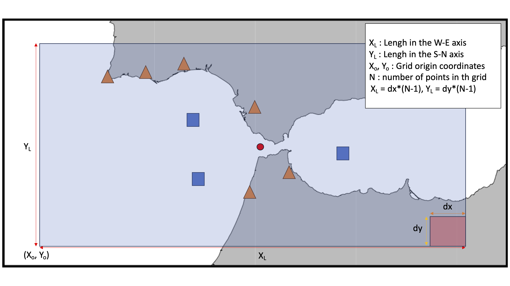

Event Location
The Event Location toolbox uses Non Lin Loc, Lomax et ., 2009 to locate seismic events.
Event Location GUI
This is a screenshot of the Event Location GUI.

- Location Parameters: Just set the paths to the workflow.
- Work / Ouput Directory: Set the root path where the necessary working directories structure will be created. In this structure will be build the velocity grid, travel-times tables and the location output.
- Model Folder Path: Set the path to your 1D or 3D model folder. Go to CLI section to see further details of how to configurate your Earth Model.
- Pick File: Set the path to the pick file. Picking file nll_input.txt output from associator toolbox contains all phase info o run the event locations.
- Grid Configuration:
- Grid Reference: SW corner of your geographic framework
- Grid Dimension in the x, y and z number of points and dx, dy dx the size in each dimension. For example the size in the X/East axis, X = dx*(x-1)
- Geographic Transformation: Simple or Global. Warning if Global is selected go directly to press Run Location
- Grid Type: Slowness (Default)
- Wave: P & S or P. This will guide the software to know wich can of velocity grid create.
- Model: 1D or 3D
- Travel Times:
- Select type of grid GRID1D or GRID3D and the corresponding wave P & S or S
- Distance Limit: The maximum distance from the center of the grid - station, to compute the travel-time
- Location parameters:
- search: algorythm to be used in the search of the location solution
- Method
Grid Definition

One the most important parts is the geographic framework settings. In the figure is displayed an example of stations distrubition (orange triangles and blue squares) inside the region of study(shaded square) with probable epicenters (red circle). Simply, the user must set the grid coordinates origin, the resolution dx, dy and dz, plus the number of points in the grid X, Y, Z. Remind that the configuration follow the left hand rule so positive W->E, S->N, Top -> Bottom in depth.
Config File
In the next section CLI and Library the user can configurate the event location tool from a config file type file.ini, an example of the typical configuration for locate local/regional events using a 1D-model as follows:
[GRID_CONFIGURATION]
LATITUDE = 41.0000
LONGITUDE = 0.0000
DEPTH_KM = -3.0
X = 400
Y = 400
Z = 50
DX = 1
DY = 1
DZ = 1
GEO_TRANSFORMATION = SIMPLE
GRID_TYPE = SLOW_LEN
PATH_TO_PICKS = /Volumes/LaCie/surfquake_test/test_real_final/nll_input.txt
PATH_TO_1D_MODEL = /Volumes/LaCie/surfquake_test/test_nll_final/model1D
PATH_TO_3D_MODEL = NONE
MODEL = 1D
P_WAVE_TYPE = TRUE
S_WAVE_TYPE = TRUE
#
[TRAVEL_TIMES_CONFIGURATION]
DISTANCE_LIMIT = 500
GRID = 1D
#
[LOCATION_PARAMETERS]
SEARCH = OCT-TREE
METHOD = GAU_ANALYTIC
In the section Location_Parameters SEARCH is just available OCT that corresponds to the Octree algorythm. In Method you can change to:
- GAU_ANALYTIC the inversion approach of Tarantola and Valette (1982) with L2-RMS likelihood function.
- EDT Equal Differential Time likelihood function cast into the inversion approach of Tarantola and Valette (1982)
- EDT_OT_WT Weights EDT-sum probabilities by the variance of origin-time estimates over all pairs of readings. This reduces the probability (PDF values) at points with inconsistent OT estimates, and leads to more compact location PDF's.
- EDT_OT_WT_ML version of EDT_OT_WT with EDT origin-time weighting applied using a grid-search, maximum-likelihood estimate of the origin time. Less efficient than EDT_OT_WT which uses simple statistical estimate of the origin time.
The model 1D: In the root path to your model, in this case at /Volumes/LaCie/surfquake_test/test_nll_final/model1D create two files called modelP and modelS. The files will be exactly the same but called differnlt. The are easily described as follows:
LAYER depth VpTop VpGrad VsTop VsGrad rhoTop rhoGrad
- depth (float) depth to top of layer (use negative values for layers above z=0)
- VpTop VsTop rhoTop P velocity, and S velocity in km/s and density in kg/m**3 at the top of the layer.
- VpGrad VsGrad rhoGrad Linear P velocity and S velocity gradients in km/s/km and density gradient in kg/m**3/km increasing directly downwards from the top of the layer.
Summarizing for the hungry users. Copy and paste this lines into your files called modelP and modelS and place it into the root folder previouly set as PATH_TO_1D_MODEL in the config file.
LAYER 0.0 6.1 0.0 3.49 0.0 2.7 0.0
LAYER 11.0 6.4 0.0 3.66 0.0 2.7 0.0
LAYER 24.0 6.9 0.0 3.94 0.0 2.7 0.0
LAYER 31.0 8.0 0.0 4.57 0.0 2.7 0.0
LAYER 45.63 8.0412 0.000118 4.4737 0.000353
LAYER 56.25 8.0425 0.000118 4.4775 0.000353
LAYER 66.88 8.0437 0.000118 4.4813 0.000353
LAYER 77.50 8.0450 0.000118 4.4850 0.000353
LAYER 88.13 8.0463 0.000118 4.4887 0.000353
LAYER 98.75 8.0475 0.000118 4.4925 0.000353
LAYER 109.38 8.0488 0.000120 4.4962 0.000353
LAYER 120.00 8.0500 0.002775 4.5000 0.000200
The model 3D:
We have created a repository with an example of 3D model that describes the SW Iberian Peninsula using a Grandin et ., 2007 to rapidly visualize the model Cabieces et al 2020
Every depth layer must be placed in files called, for example
For the P wave --> layer.P.mod5.mod
For the S wave --> layer.S.mod5.mod
Which means that inside this file there is the grid with the value of the Vp or Vs, for the layer at depth 5km.
The layer must be a matrix with the values in the rows from top to bottom S -> N, and from left to right E -> W. That's mean following the next example that the file corresponding to a depth layer 5km "layer.P.mod5.mod" could be like this:
4.5759 4.5735 ...... 4.5707 4.5677
4.5760 4.5755 ...... 4.5766 4.5670
...... ...... ...... ...... ......
4.6800 4.6500 ...... 4.6730 4.5678
This matrix means that, for example corresponds to geographic points long,lat (separated in cells of, dx dy of 0.5 x 0.5 degrees.
(-10.0,34.0) (-9.5,34.0) ...... (-9.0,34.0) (-8.5,34.0)
(-10.0,34.5) (-9.5,34.5) ...... (-9.0,34.5) (-8.5,34.5)
....... ..... ..... .... ...... .... ...... ...........
(-10.0,40.0) (-9.5,40.0) ...... (-9.0,40.0) (-8.5,40.0)
Warning grid cells must be [dx = dy = dz] for a correct interpretation.
The picking file NonLinLoc Phase file format nll_input.txt is automatically generated when the associator. However, you can make it by your own. Here, it's attached how is the file describing one event. For more events just you need yo write the picking info separated by a blank row. The location algorythm will locate all events with picking information inside the file
Station_name Instrument Component P_phase_onset P_phase_descriptor First_Motion Date Hourmin Seconds GAU Err Coda_duration Amplitude Period
ARBS ? ? ? P ? 20220126 0200 14.700 GAU 2.50E-03 -1.00E+00 85600000.0 -1.00E+00
ARBS ? ? ? S ? 20220126 0200 16.320 GAU 7.50E-03 -1.00E+00 85600000.0 -1.00E+00
CORG ? ? ? P ? 20220126 0200 18.210 GAU 2.50E-03 -1.00E+00 17000000.0 -1.00E+00
CORG ? ? ? S ? 20220126 0200 23.020 GAU 7.50E-03 -1.00E+00 17000000.0 -1.00E+00
PAND ? ? ? P ? 20220126 0200 14.200 GAU 2.50E-03 -1.00E+00 132000000000.0 -1.00E+00
PAND ? ? ? S ? 20220126 0200 15.550 GAU 2.50E-03 -1.00E+00 132000000000.0 -1.00E+00
CSOR ? ? ? P ? 20220126 0200 17.510 GAU 2.50E-03 -1.00E+00 45200000.0 -1.00E+00
CSOR ? ? ? S ? 20220126 0200 21.330 GAU 5.00E-03 -1.00E+00 99900000.0 -1.00E+00
CEST ? ? ? P ? 20220126 0200 15.570 GAU 2.50E-03 -1.00E+00 74500000.0 -1.00E+00
CEST ? ? ? S ? 20220126 0200 17.660 GAU 2.50E-03 -1.00E+00 90000000.0 -1.00E+00
SALF ? ? ? P ? 20220126 0200 18.080 GAU 5.00E-03 -1.00E+00 7240000000.0 -1.00E+00
SALF ? ? ? S ? 20220126 0200 21.930 GAU 7.50E-03 -1.00E+00 24900000000.0 -1.00E+00
GENF ? ? ? P ? 20220126 0200 18.470 GAU 2.50E-03 -1.00E+00 20100000.0 -1.00E+00
GENF ? ? ? S ? 20220126 0200 22.730 GAU 5.00E-03 -1.00E+00 43900000.0 -1.00E+00
CARF ? ? ? P ? 20220126 0200 22.230 GAU 2.50E-03 -1.00E+00 1750000000.0 -1.00E+00
CARF ? ? ? S ? 20220126 0200 29.370 GAU 7.50E-03 -1.00E+00 2870000000.0 -1.00E+00
Event Location from CLI
Usage
>> surfquake locate seismic event [-h] -i INVENTORY_FILE_PATH -c CONFIG_FILE_PATH -o OUT_DIR_PATH [-g] [-s]
Interactive help
Run Event Location from CLI
>> surfquake locate -i /surfquake_test/metadata/inv_all.xml -c /surfquake_test/config_files/nll_config.ini -o /surfquake_test/test_nll_final -g -s
Event Location from Library
Classes
class NllManager:
def __init__(self, nll_config: Union[str, NLLConfig], metadata_path, working_directory):
"""
Manage NonLinLoc program to locate seismic events.
:param nll_config: Path to nll_config.ini file or to NLLConfig object.
:param metadata_path: Path to metadata file.
:param working_dirctory: Root path to folder to establish the working and output structure.
"""
self.__get_nll_config(nll_config)
self.__location_output = working_directory
self.__create_dirs()
self.__dataless_dir = metadata_path
self.__metadata_manager = None
Methods
# instance method
def vel_to_grid(self):
"""
# Method to generate the velocity grid #
:return: Extracts the velocity grid as layer*.buf and layer*.hdr inside working_dir/model
template file temp.txt in working_dir/temp.txt
"""
# instance method
def grid_to_time(self):
"""
# Method to generate the travel-time tables file #
:return: Extracts the travel-times per wave type as
[layer.P.STA.angle.buf, layer.P.STA.time.buf, layer.P.STA.time.hdr]
inside ./working_dir/time
template file at ./work_dir/temp/G2T_temp.txt
"""
# instance method
def run_nlloc(self):
"""
# Method to run the event locations from the picking file and config_file.ini #
:return: locations files *hyp inside ./working_dir/loc
template file at ./work_dir/temp/run_temp.txt
"""